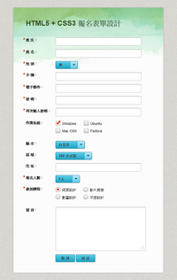
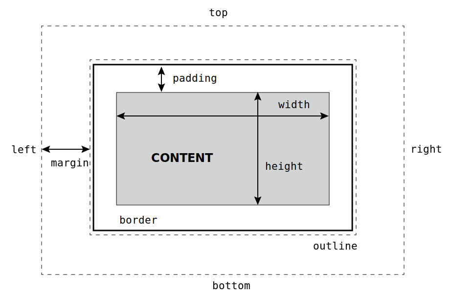

-
課程一：Html 蓋述
HTML 發展歷史過程蓋述 (Html5 PPT)

-
課程二：CSS StyleSheet 介紹
1. CSS Stylesheet 樣式表 整包下載(120kb)
第二週作業 From 報名表單製作
2.HTML5 + CSS3 報名表單範例 報名表單範例檔案下載(524kb)
 檢視範例
Padding & Margin 定位示意圖

(上圖為 .svg 格式) -
課程三：
報名表單實作練習與講解
基本型無樣式表單範例 (按右鍵另存新檔)
表單圖片素材下載1. CSS 排版與樣式實務應用
2. CSS 間距與內距的應用
3. 報名表製作實際操作
-
課程四：
1. 版面、版型的分析與切割觀念
2. CSS 相對定位與絕對定位
3. PS 快速切圖與製做背景連續貼圖
4. 範例報名表單網頁實作
第四週作業階層式下拉式表單實務教學
-
課程五：
階層式下拉式表單樣式變化實作教學
/* 預設值 */
a:link/* 已連結過 */
a:visited/* 滑鼠移至連結 */
a:hover/* 選擇的連結 */
a:active實例操作：應用與變化練習
-
課程六：
實例操作：設計版面切版與運用。
範例下載： 點我下載素材
-
課程七：
1. 應用搭配搭配 jQuary 套件，照片/圖片瀏覽。
2. 嵌入外部多媒體影片和 Flash 檔案
3. 個人網站規劃實作